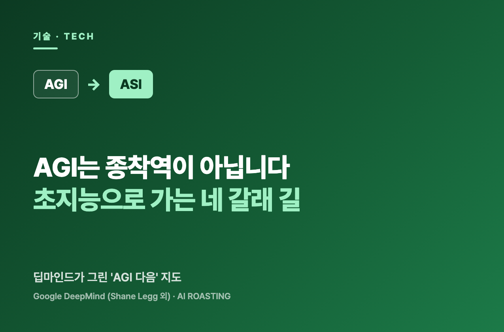

구글 딥마인드가 인간 수준 AGI 이후, 초지능(ASI)으로 가는 길을 지도로 정리한 보고서를 냈습니다.
길은 네 갈래입니다. 규모 확장, 패러다임 전환, 재귀적 자기개선, 멀티에이전트 집단입니다. 네 길은 동시에 진행됩니다.
핵심은 'AI는 한 번의 충격이 아니라 연속된 변화'라는 것입니다. 리더는 단발 대응이 아니라 지속 적응 체계를 갖춰야 합니다.
단 한 번의 AI 충격을 기다리고 계십니까?
딥마인드는 그 그림이 틀렸다고 말합니다. 변화는 한 번이 아니라 연속으로 밀려옵니다.
AGI 논쟁은 대부분 '언제 오느냐'에 머물렀습니다. 이 보고서는 질문을 한 칸 옮깁니다. 'AGI 다음은 무엇인가'를 봅니다.
저자는 딥마인드의 AGI 안전팀입니다. 보편 지능 이론을 세운 셰인 레그와 마커스 허터가 이름을 올렸습니다. 단순 전망이 아닙니다. 무엇이 진보를 밀고, 무엇이 막는지 지도를 그렸습니다.
리더에게 의미는 분명합니다. AI 능력이 인간 수준에서 멈추지 않는다면, 우리 사업의 어디에 베팅하고 무엇을 미리 준비해야 하는지가 바뀝니다.
보고서의 출발점은 한 숫자입니다. AI를 굴리는 '유효 연산'이 지난 10년간 매년 약 10배씩 늘었습니다.
이 10배는 세 요인의 곱입니다. 하드웨어 개선 연 1.5배, 투자 증가 연 2.5배, 알고리즘 효율 연 3배입니다. 합치면 연 10배, 10년이면 1만 배입니다.
그래서 흔한 그림 하나가 흔들립니다. 'AGI가 오면 한 번의 큰 단계 변화가 일어난다'는 그림입니다. 모델 성능이 멈춰도 같은 비용으로 인스턴스 수를 계속 늘릴 수 있기 때문입니다.
리더에게 이 그림의 차이는 큽니다. 단발 변화는 '한 번 대응하고 끝'이지만, 연속 변화는 '매년 다시 보는 운영 과제'입니다. 둘은 예산도, 조직도, 마음가짐도 다르게 짜야 합니다.
첫째, ASI를 '천재 한 명'이 아니라 '집단을 능가하는 시스템'으로 정의했습니다. 보고서는 AGI를 중간값 인간 한 사람 수준으로 봅니다. ASI는 대규모 인간 전문가 집단을 거의 모든 영역에서 능가하는 시스템으로 정의합니다. 기준을 높게 잡은 이유가 있습니다. 오늘의 거대 언어모델이 이미 수백만 인스턴스로 병렬 작동하기 때문입니다. ASI는 '한 명의 초천재'가 아니라 '인간 조직 전체보다 똑똑한 디지털 조직'에 가깝습니다.
둘째, ASI로 가는 길은 네 갈래이고, 동시에 진행됩니다. 보고서의 뼈대입니다. 네 경로는 서로 독립적이며, 한 길이 막히면 다른 길이 더 강하게 추진됩니다. 규모 확장이 천장에 닿으면 알고리즘 전환에 자원이 몰리는 식입니다.
| 경로 | 핵심 내용 | 가장 큰 불확실성 |
|---|---|---|
| 규모 확장 | 연산·데이터·모델 크기를 계속 키운다 | 규모가 능력으로 얼마나 이어지나. 한계 수익은? |
| 패러다임 전환 | 지금의 트랜스포머와 다른 새 방식이 등장 | 예측 자체가 어렵다. 언제 무엇이 나올지 모른다 |
| 재귀적 자기개선 | AI가 AI 연구를 가속해 스스로를 개선 | 능력이 폭발할 수도, 금세 꺾일 수도 있다 |
| 멀티에이전트 집단 | 수많은 AGI가 모여 집단 지능을 형성 | 집단의 창발 동역학이 거의 규명되지 않았다 |
네 경로는 대체로 독립적이며 병렬로 진행될 가능성이 높습니다. 단, 진행 속도는 다릅니다. 출처: Genewein et al. (2026), From AGI to ASI, Table 3.
셋째, 디지털 지능은 인간이 못 가진 이점을 가지고, 연산이 늘수록 격차가 벌어집니다. 보고서는 이를 표 하나로 정리합니다. 이 이점들은 '연산을 더 부으면 더 커지는' 종류입니다. 사람은 빠른 컴퓨터의 덕을 보지만, AI는 그 덕을 훨씬 크게 봅니다.
| 디지털 지능의 이점 | 의미 |
|---|---|
| 입출력 속도 | 정보를 받아 결과를 내는 대역폭이 갈수록 커진다 |
| 내부 처리 속도 | '생각'을 깊게(순차) 또는 넓게(병렬) 가속할 수 있다 |
| 작업 기억·암기 | 인터넷의 상당 부분을 외울 만큼 기억이 크다 |
| 기반 독립성 | 더 강한 컴퓨터로 실행 중에도 옮겨탈 수 있다 |
| 무손실 복제 | 코드뿐 아니라 '경험'까지 완벽히 복사·백업한다 |
| 경험의 고대역 공유 | 학습 신호를 집단이 빠르게 나눠 가진다 |
여섯 이점은 모두 연산이 늘수록 강해집니다. 그래서 인간과 AI의 격차도 함께 벌어집니다. 출처: Genewein et al. (2026), From AGI to ASI, Table 1.
넷째, 길마다 병목이 있고, 대부분 이미 상쇄되는 중입니다. 보고서가 솔직한 지점입니다. 진보를 막을 여섯 가지 마찰을 나열하고, 각각을 무엇이 상쇄하는지 함께 적습니다. 어느 병목이 진짜 벽이 될지는 '열린 연구 질문'으로 남겨둡니다.
| 병목 | 무엇이 막나 | 무엇이 상쇄하나 |
|---|---|---|
| 데이터 벽 | 학습용 고품질 데이터가 동난다 | 합성 데이터, 시뮬레이션, 자가 대국, 강화학습 |
| 자원 수요 폭증 | 칩·에너지·투자가 감당 못 할 속도로 는다 | AI가 만드는 경제 수익, 효율 개선, 인프라 증설 |
| 패러다임 한계 | 지금의 신경망으로는 부족할 수 있다 | 덜 똑똑한 AI도 다음 패러다임 연구를 돕는다 |
| 연구 난이도 상승 | 성과가 쌓일수록 새 발견이 어려워진다 | AI 연구자가 실험·가설 탐색을 가속한다 |
| 추상화 장벽 | AI가 인간 개념만 재조합할 뿐 새 개념을 못 만든다 | 규모 확장과 집단화가 장벽 너머로 밀 수 있다 |
| 의도적 감속 | 규제·사고·사회 반발이 진보를 늦춘다 | 경제·군사 경쟁이 감속 압력을 압도할 수 있다 |
각 병목이 실제로 벽이 될지는 상쇄 요인이 얼마나 효과적인지에 달려 있습니다. 보고서는 이를 단정하지 않고 열린 질문으로 둡니다. 출처: Genewein et al. (2026), From AGI to ASI, Table 4.
다섯째, 가장 흥미로운 병목은 '추상화 장벽'입니다. 오늘의 AI는 인간이 만든 개념을 흡수해 재조합하는 데 뛰어납니다. 그러나 날것의 데이터에서 '힘'이나 '인과' 같은 새 개념을 스스로 길어 올리는 능력은 약합니다. 데미스 허사비스가 던진 'AI 진짜 시험'이 이 지점을 찌릅니다.
"1900년대 초 아인슈타인의 시대로 돌아가, AI가 아인슈타인이 가졌던 같은 정보만으로 일반 상대성 이론을 실제로 만들어낼 수 있을까요? 오늘의 답은 분명히 '아니오'입니다. 여전히 무언가가 빠져 있습니다." 데미스 허사비스, 구글 딥마인드 CEO (보고서 인용)
이 장벽이 진짜 벽이라면, 개별 AI는 인간 수준 부근에서 멈출 수 있습니다. 다만 보고서는 여지를 둡니다. 개별 모델이 멈춰도, 집단으로 묶으면 능력이 그 너머로 갈 수 있다는 것입니다.
여섯째, ASI도 전능하지 않습니다. 보고서가 분명히 못 박는 대목입니다. 초지능은 전지하지도 전능하지도 않습니다. 물리 법칙, 실시간으로 흐르는 현실, 계산 복잡도, 논리의 한계에 묶입니다. 노화를 '치료'하거나 기후를 되돌린다는 보장은 어디에도 없습니다.
변화가 연속이라면 점검도 연속이어야 합니다. 90일 뒤 한 시간짜리 회의를 지금 잡습니다. 안건은 셋입니다. '지난 분기에 새로 가능해진 일은 무엇인가, 작년에 접었던 일 중 다시 풀 만한 것은 무엇인가, 우리 워크플로우 중 바꿀 곳은 어디인가.' 한 번의 도입이 아니라 반복 루틴을 먼저 만듭니다. (오늘)
멀티에이전트는 먼 미래가 아닙니다. 여러 단계로 이뤄진 반복 업무(예: 보고서 작성)를 하나 고릅니다. 지금은 사람이나 AI 하나가 통째로 한다면, '초안 AI → 검토 AI → 정리 AI'로 단계를 나눠 한 번 돌려봅니다. 능력이 수로 커진다는 보고서의 핵심을 작게 체험하는 것입니다. (1주일)
표의 '병목'과 '상쇄' 두 칸을 우리 회사 사정으로 채웁니다. 데이터가 부족한가, 비용이 병목인가, 검증할 사람이 없는가. 그 옆에 '무엇으로 뚫을지'를 한 줄씩 적습니다. 막연한 불안이 분기 회의에 올릴 실행 목록으로 바뀝니다. (1개월)
이것은 예측이 아니라 가능성 지도입니다. 보고서는 ASI가 언제 온다고 단정하지 않습니다. 첫 문장이 '미래는 예측 불가능하다'입니다. 불확실성이 크고, 저자들도 그 점을 거듭 강조합니다. 숫자와 시점을 확정처럼 인용하면 안 됩니다.
ASI가 곧 온다는 보장은 없습니다. 보고서의 결론은 양쪽을 다 엽니다. AI는 AGI에 닿기 전에 정체할 수도 있고, AGI에서 ASI로 비교적 매끄럽게 넘어갈 수도 있습니다. 다만 '정확히 인간 수준에서 멈춘다'는 시나리오는 가능성이 낮다고 봅니다.
전능 환상을 경계해야 합니다. 초지능이라도 물리·실시간·복잡도의 벽에 묶입니다. AI 도입을 '모든 것을 푸는 만능 열쇠'로 포장하면 기대와 투자가 어긋납니다. 그리고 이 보고서는 'AI 안전·정렬은 충분히 풀린다'고 가정한 위에서 쓰였습니다. 현실에서 그 가정은 아직 미해결 난제입니다.
AI를 한 번의 사건으로 보는 리더는 늦습니다. 연속된 변화로 보고, 지속 적응 체계를 먼저 갖추는 리더가 앞섭니다.
AGI (인공 일반지능): 거의 모든 인지 과제에서 중간값 인간 한 사람 수준에 이른 시스템입니다. 보고서는 '한 명의 사람만큼 똑똑한 AI'로 씁니다.
ASI (인공 초지능): 거의 모든 영역에서 인간을 넘어선 일반지능입니다. 보고서는 기준을 높게 잡아 '대규모 인간 전문가 집단을 능가하는 시스템'으로 정의합니다.
유효 연산 (Effective compute): 하드웨어 개선, 투자 증가, 알고리즘 효율을 모두 곱한 실질 연산량입니다. 지난 10년간 연 약 10배씩 늘었습니다.
재귀적 자기개선: AI가 AI 연구를 가속해 더 나은 AI를 만들고, 그 AI가 다시 연구를 가속하는 되먹임입니다. 빠를 경우 '지능 폭발'로 이어질 수 있습니다.
멀티에이전트 집단: 여러 AI 에이전트가 분업·협력해 개별 능력의 합을 넘는 집단 지능을 형성하는 방식입니다.
추상화 장벽 (Abstraction barrier): AI가 인간이 만든 개념은 잘 재조합하지만, 날것의 데이터에서 새 개념을 스스로 만드는 능력은 약하다는 한계입니다.
유니버설 AI / AIXI: 셰인 레그와 마커스 허터가 정립한, 기계 지능의 이론적 상한선입니다. 계산은 불가능하지만, 더 강한 AI로 아래에서 근사해 갈 수 있습니다.
- Genewein, T., Franklin, M., Lerchner, A., Orseau, L., Albanie, S., Bales, A., Wyeth, C., Chan, S., Gabriel, I., Leibo, J. Z., Dafoe, A., Hutter, M., Graepel, T., & Legg, S. (2026, June 10). From AGI to ASI [Preprint]. arXiv. (원문 보기 ↗)
- Legg, S., & Hutter, M. (2007). Universal intelligence: A definition of machine intelligence [Article]. Minds and Machines, 17(4), 391–444.